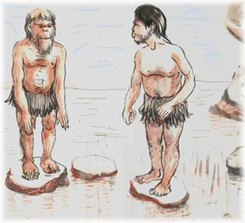

Problem C
Titans are
in Danger!
Input: standard input
Output: standard output
Time Limit: 30 seconds
|
 |
|
Fig: A simple case, when the number of Titans is two. The
extra stone is between the two titans. |
The Titans are in danger. They are trapped in a volcanic lake over a few stones. The number of stones is just one greater than the number of Titans. Only one Titan can stand over a stone at a time. They are mighty but helpless. They can see the shore but cannot reach it. The extra stone is of somewhat different nature. Once it is used, it sinks. But if the Titans can arrange themselves in a completely new orientation after that use, the stone rises again. The Titans could not figure out what to do? One of the merciful Gods became visible from the eastern sky and said,
“Use the stone to raise the stone….
When it finishes, you are free….”
So you are going to help them.
Note: The Titans can jump from one stone to another safely and easily if the target stone is vacant. No two Titans will have the same initial character in the name. Whenever the stone rises, the leftmost Titan loves to start. When all possible orientation is generated without repeating any state the Titans get free. A new state can be generated by exactly three jumps.
Input
The input file contains several lines of input. Each line describes an initial orientation of Titans (as a sequence of the initial character of their names). The maximum number of Titans is 9. Input is terminated by end of file.
Output
For each line of orientation you have to determine all possible orientations so that the titans become free. Print blank line after the output for each line of input.
Sample
Input
ab
ugc
gucroth
Sample
Output
ab
ba
ugc
guc
cug
ucg
gcu
cgu
gucroth
ugcroth
cguroth
gcuroth
ucgroth
cugroth
rugcoth
urgcoth
grucoth
rgucoth
ugrcoth
gurcoth
gcruoth
cgruoth
rgcuoth
grcuoth
crguoth
rcguoth
rcugoth
crugoth
urcgoth
rucgoth
curgoth
.
.
.
.
.
/***************Many lines of outputs here which are not shown****************/
.
.
.
.
.
rhcuotg
ruchotg
urchotg
cruhotg
rcuhotg
ucrhotg
curhotg
cuhrotg
uchrotg
hcurotg
churotg
uhcrotg
hucrotg
(Regional Warm-up Contest, Problem setter: Tanbir Ahmed)
( I would like to thank Hossain
Muhammad Farook (
A machine can do the work of fifty ordinary man, but no machine can do
the work of an extra-ordinary man.